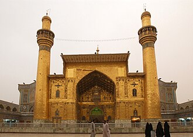

Overview
Le mausolée de l'imam Ali ou mausolée d'Ali est un sanctuaire situé dans la ville irakienne de Najaf. Abritant les restes de l'imam Ali Ibn Abi Talib, cousin du prophète Mahomet et premier imam du chiisme et quatrième calife de l'islam (656-661), il est un lieu de pèlerinage important pour les chiites. Selon la tradition chiite, les prophètes Adam et Noé y seraient également enterrés.
العتبة العلوية المقدسة أو الروضة الحيدرية أو ضريح الإمام علي أو حضرة علي هو مرقد ديني ومسجد يقع في مدينة النجف في العراق، وهو من الأماكن المقدسة عند المسلمين الشيعة، إذ تذكر العديد من المصادر وغالبيتها تعود للمؤرخين الشيعة أنه تم تشيّيده على قبر الإمام علي بن أبي طالب ابن عم الرسول محمد وصهره، من آل بيته، وأحد أصحابه، هو رابع الخلفاء الراشدين عند السنة وأحد العشرة المبشرين بالجنة وأوّل الأئمّة عند الشيعة. جُدد المرقد عدة مرات وفي مراحل مختلفة، ولاحقاً أُعيد تذهيب القبة التي تعلوه وأضيف صحن جديد بإسم صحن فاطمة الزهراء. أُلحق بالمرقد مكتبة الروضة الحيدرية التي تضم العديد من النفائس والمخطوطات الأثرية.
The Imam Ali Shrine, also known as the Mosque of Ali, is the mausoleum of Ali, the cousin and son-in-law of the Islamic prophet Muhammad, the first Shia Imam, and the fourth Rashidun caliph. It is located in Najaf, in the Najaf Governorate of Iraq. It is a profoundly holy site in Shia Islam.
Irak'ın Necef kentinde bulunan İmam Ali Türbesi (Arapça:حرم الإمام علي ya da kısa adıyla İmam Ali Mescidi veya İmam Ali Camii, İslam'ın Şii itikadına bağlı yaklaşık 200 milyon Müslüman için Suudi Arabistan'da bulunan Kabe, Medine'deki Mescid-i Nebevî' ve Kudüs'teki ilk islam kıblesi Mescid-i Aksa dan sonra dördüncü kutsal yerdir. Burası İslam peygamberi Muhammed'in amcasının oğlu, damadı ve destekçisi olan Ali ibn Ebu Talib'in defnedildiği yerdir. Ali, Şii inancına göre ilk imam, Sünni inancına göre ise dördüncü halife olarak kabul edilir. Ayrıca Şii inancına göre bu camide İmam Ali'nin yanında Adem ile Havva ve Nuh peygamberin de bedenleri defnedilmiş bulunmaktadır.
Tempat Suci Imam 'Alī, juga dikenal sebagai Masjid 'Alī, yang terletak di Najaf, Irak, adalah sebuah masjid yang diyakini banyak umat Islam berisi makam 'Alī ibn Abi Tālib, sepupu, menantu dan sahabat nabi Islam Muhammad. Kaum Syiah menganggap 'Alī sebagai Imam pertama mereka, dan kaum Sunni menganggapnya sebagai Khalifah Rasyid Sunni keempat. Menurut kepercayaan Syi'ah, dimakamkan di sebelah 'Alī di dalam masjid ini adalah sisa-sisa Adam dan Nuh. Setiap tahun, jutaan peziarah mengunjungi Makam dan memberi penghormatan kepada Imam 'Alī. Di sisi lain, disebutkan bahwa orang yang dimakamkan di makam tersebut bukanlah Ali melainkan salah satu sahabat Nabi yang bernama Al-Mughirah bin Syu'bah.
امام علی کا حرم ، جسے مسجد علی بھی کہا جاتا ہے۔ جسے بہت سے مسلمان سمجھتے ہیں کہ خلیفہ اور امام علی ابن ابی طالب کی قبر ہے، یہ شیعہ کے لیے مقدس ہے۔ وہ اسلامی پیغمبر محمد کے چچا زاد بھائی تھے اور بعد میں ان کے داماد بھی بنے۔ شیعہ علی ابن ابی طالب کو اپنا پہلا امام مانتے ہیں اور سنی انھیں اپنا چوتھا خلیفہ راشدہ مانتے ہیں۔ ہر سال لاکھوں زائرین مزار پر جاتے ہیں اور خلیفہ علی ابن ابی طالب کو خراج تحسین پیش کرتے ہیں اور عثمانی سلطان عبد العزیز نے چوتھے خلیفہ کے مقدس مقام کو تحائف بھی پیش کیے۔
Die Imam-Ali-Moschee ist eine Moschee in der Stadt Nadschaf im Irak. Sie ist benannt nach dem im Jahr 661 ermordeten und dort beerdigten arabischen Kalifen ʿAlī ibn Abī Tālib, dem Schwiegersohn und Vetter des Propheten Mohammed. Sie zählt zu den wichtigsten Heiligtümern der Schiiten.
La mezquita del Imán Alí o santuario del Imán Alí también conocida como Ali Masjid o la mezquita de Alí, está ubicada en Nayaf, Irak. Es el tercer lugar más sagrado para los casi 200 millones de seguidores de la rama chiita del Islam. Alí ibn Abi Tálib, primo y yerno de Mahoma, el primer imán, y cuarto califa ortodoxo, está enterrado aquí. Según la creencia chií están enterrados junto a Alí en esta mezquita los "restos de Adán y Noé".
La moschea dell'Imām ʿAlī, nota anche come Masjid ʿAlī o moschea di ʿAlī, sita a Najaf (Iraq) è considerata dai circa 200 milioni di sciiti del mondo, il terzo luogo santo dell'islam. ʿAlī ibn Abī Ṭālib, cugino e genero di Maometto, quarto califfo ortodosso per i sunniti e primo Imam per gli sciiti vi è sepolto. Inumato accanto ad ʿAlī vi sarebbero, per gli stessi sciiti, i resti di Adamo ed Eva, nonché di Noè.
O Santuário do Imã Ali, também conhecido como a Mesquita de Ali, é uma mesquita e santuário xiita localizado em Najaf, na província de Najaf, no Iraque. O local é um mausoléu que, segundo a crença de muçulmanos xiitas e sunitas, abriga o túmulo de Ali ibne Abi Talibe, primo, genro e companheiro do profeta Muhammad.
De Imam Alimoskee, ook bekend als de Meshed Ali of Imam Alimausoleum, is een moskee in de Iraakse stad Najaf. De moskee is een heilige plek voor moslims, vooral sjiieten. De meesten geloven dat imam Ali, de schoonzoon en neef van de profeet Mohammed, er begraven ligt.
伊玛目阿里清真寺或伊玛目阿里圣陵 位于今伊拉克的纳杰夫，是伊斯兰教什叶派第三大圣寺，仅次于麦加的禁寺和麦地那的先知寺，伊斯兰教创始人穆罕默德的堂弟暨女婿、逊尼派所承认的第四任正统哈里发、什叶派第一任伊玛目阿里·本·阿比·塔利卜即安葬于此。由于阿里有着“海德尔” 的称号，这座陵寝建筑（同时也是清真寺）及其辖区也称海德里耶陵园。根据什叶派的说法，阿里与先知阿丹（伊斯兰教中的亚当）和努哈（伊斯兰教中的挪亚）的遗骸一起安葬在这座圣陵中。
이맘 알리 성전(아랍어: حَرَم ٱلْإِمَام عَلِيّ) 또는 알리 모스크(아랍어: مَسْجِد عَلِيّ)는 이라크 나자프주 나자프에 위치한 시아파 모스크이자 성전이다. 이곳은 시아파와 수니파 무슬림들이 이슬람교의 예언자 무함마드의 사촌이자 사위이며 동료였던 알리 이븐 아비 탈리브의 무덤이 있다고 믿는 마우솔레움이다.
हजरत इमाम अली पवित्र तीर्थ;, जिसे मस्जिद अली भी कहा जाता है। इराक के नजफ शहर में स्थित' अली मस्जिद, शिया मुस्लिमों के लिए पवित्र स्थल भी है। । हजरत अली इब्न अबी तालिब, पहले इमाम और चौथे खलीफा यहां दफन है। शिया मुसलमानों की आस्था के अनुसार, इस मस्जिद के भीतर। हजरत अली की कब्र के बगल में एडम और नूह को दफनाया गया है। इसी आस्था अनुसार यह हर साल लाखों तीर्थयात्री हजरत इमाम अली के मजार की जियारत (दर्शन) करने आते है।
Мечеть Имама Али, также известна как Могила Али — мечеть, расположенная в Эн-Наджафе, Ирак. По шиитской традиции мечеть является местом погребения Адама и Ноя.
Imam Alis helgedom, även känd som Imam Alis moské, är en helgedom och moské i Najaf i Irak som byggts runt den fjärde kalifen och förste shiaimamen Ali ibn Abi Talibs grav. Den byggdes år 786 av abbasidkalifen Harun al-Rashid.
Moscheea Imamului Ali sau Masjid Ali este o moschee din orașul Najaf, Irak. Moscheea este considerată de către musulmanii șiiți ca fiind a patra cea mai importantă moschee din lume, după marile moschei de la Mecca, Medina și Ierusalim. Importanța acestei moschei se datorează faptului că aici se află mormântul califului Ali, vărul și ginerele lui Mahomed. Conform tradiției șiite, alături de rămășițele lui Ali se află îngropați Adam și Noe.
On the map
Documents and links
- Wikipédia — Français
- Wikipédia — العربية
- Wikipédia — English
- Wikipédia — Türkçe
- Wikipédia — Bahasa Indonesia
- Wikipédia — اردو
- Wikipédia — Deutsch
- Wikipédia — Español
- Wikipédia — Italiano
- Wikipédia — Português
- Wikipédia — Nederlands
- Wikipédia — 中文
- Wikipédia — 한국어
- Wikipédia — हिन्दी
- Wikipédia — Русский
- Wikipédia — Svenska
- Wikipédia — Română
- Wikidata — Q838359
Data: Wikidata (CC0), updated every 3 months. The year is the earliest known construction date of the building: for a building that became a mosque later (such as Hagia Sophia), it is that of the original building. Photos: Wikimedia Commons, author and licence on each photo's page.